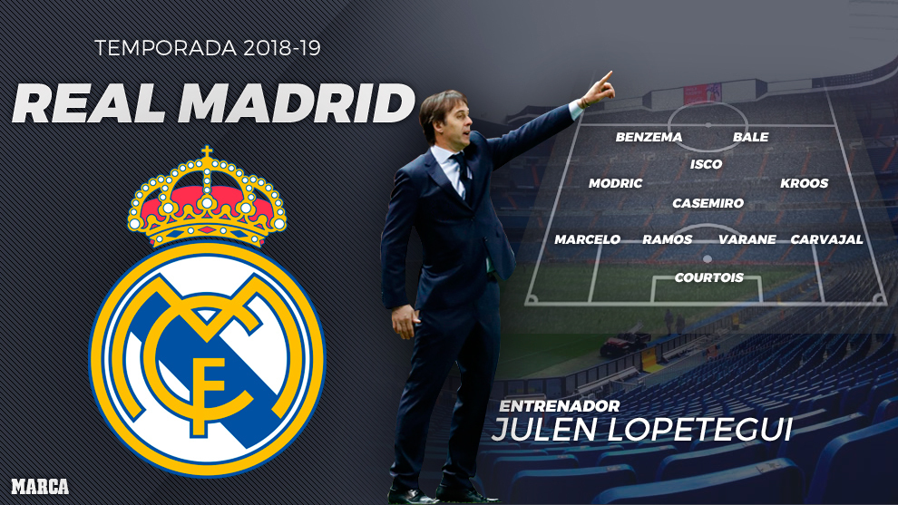
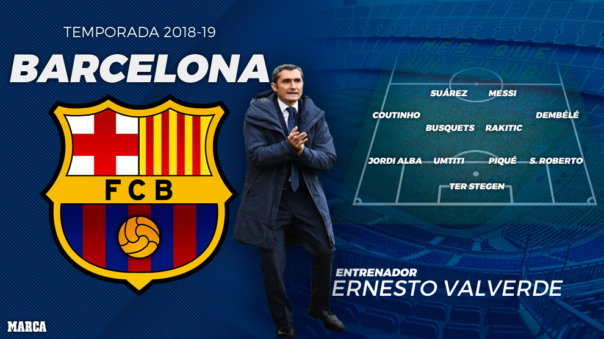
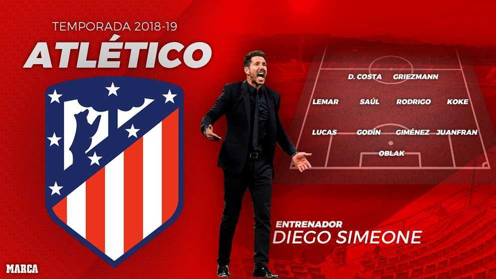
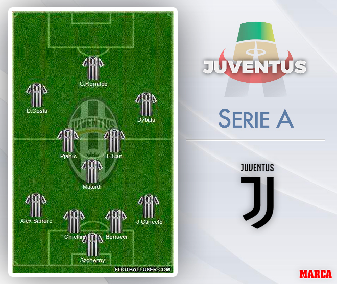
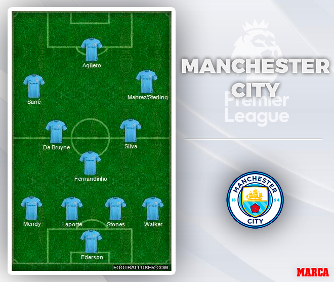
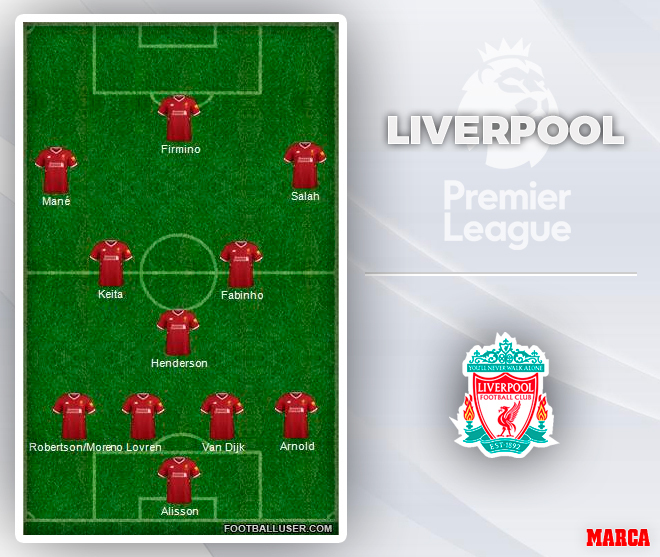
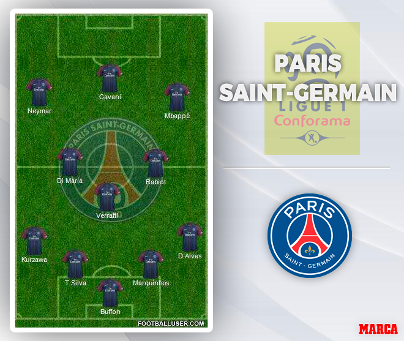
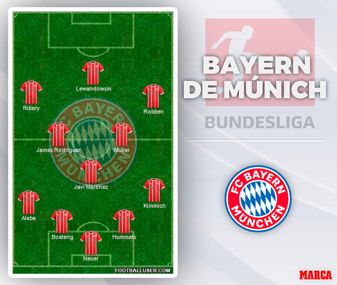

In English
In English


Con el sorteo de Champions a una semana de distancia en el calendario, los grandes de Europa tienen más que perfilados sus onces para asaltar el inexpugnable trono del Real Madrid. Serios aspirantes que compiten por tener el mejor equipo del continente, con algunos refuerzos de renombre y otros onces en los que apenas se han hecho un par de retoques.
Real Madrid: el campeón, a por una gesta de otra época

Lo mejor: La base del equipo es la misma que ha ganado tres Champions seguidas, cuatro de las últimas cinco
ediciones. La competitividad, el hambre y la experiencia en la competición está fuera de toda duda para unos jugadores que han
arrasado año tras año en Europa. La gesta sería de otro planeta y de otra época.
Lo peor: La salida de Cristiano Ronaldo deja al Real Madrid huérfano de goles y de un líder, el hombre que se
echó el equipo a las espaldas en los momentos difíciles de las pasadas ediciones para que el barco blanco amarrase siempre en
la costa del éxito.
Barcelona: Messi quiere volver a reinar

Lo mejor: Coutinho ya está asentado y, este año sí, podrá ayudar en Champions.
El palo ante la Roma también sirve de escarmiento para un equipo que lleva demasiados años viendo desde lejos cómo el eterno
rival triunfa. Con Messi enrabietado tras el fiasco del Mundial, el Barça aspira a recuperar el trono.
Lo peor: La pesadilla del Olímpico dejó claro que el equipo es inconsistente y, más allá de la contratación
de Vidal, el resto de incorporaciones no tienen experiencia Champions como para hacerse con los mandos de la situación en un
momento complicado. Si Messi no está a su mejor nivel, el equipo sufre, y Suárez no ha arrancado de la mejor manera el curso.
Atlético de Madrid: inversión para dar el último paso

Lo mejor: La final se juega en el Metropolitano y eso es un plus de ilusión para un equipo que se ha fijado como
objetivo quitarse la obsesión con la Champions en su propia casa. El club ha realizado una fuerte inversión para rodear a Griezmann
de grandes jugadores como Lemar, Rodrigo o Gelson. Con el plus que aporta Simeone y un estilo definido, son aspirantes a todo.
Lo peor: Precisamente su estilo le jugó una mala pasada el curso anterior. No fue capaz de dominar los encuentros
ante el Qarabag y eso le condenó a la Europa League. Si ejerce de equipo grande y no se deja sorprender, tendrá mucho ganado. Si en
el plano psicológico no pesan los intentos fallidos del pasado y aparece una nueva mentalidad ganadora, habrá que ver quién les elimina.
Juventus: el 'Rey' para reinar en Europa

Lo mejor: No hay duda. Si algo tiene esta Juventus que la haga diferencial en la máxima competición europea
ese es Cristiano Ronaldo. Una evidencia que tiene en los datos su mejor argumento: ha sido el máximo realizador en las últimas
cinco ediciones de la Champions League. La Vecchia Signora este año quiere alzar un título que no conquista desde hace 22 años.
Una ambición compartida con Cristiano que hacen de los bianconeri claros candidatos.
Lo peor: En la Vecchia Signora puede haber varios factores que supongan un arma de doble filo. El primero de
ellos puede ser la presión añadida que tiene el equipo con la llegada de Cristiano y el objetivo de conquistar una Champions
que parece casi una obsesión en Turín. El segundo aspecto puede ser la centralización de CR7 en el juego. El equipo bianconero
ya demostró en la primera jornada de Serie A que tiene más argumentos que el portugués en ataque y que la búsqueda incesante en
el '7' puede pasarles factura.
Manchester City: la asignatura pendiente de Guardiola

Lo mejor: Guardiola y el City son, posiblemente, uno de los equipos que mejor fútbol procesa en el Viejo
Continente. Un hecho que no han podido demostrar todavía en la máxima competición europea. Extender su hegemonía más allá de
las Islas es la asignatura pendiente de un proyecto citizen que sigue forjándose con contrataciones que elevan, aún más si cabe,
el nivel, como Mahrez y, sobretodo, con la continuidad de un técnico que ha implementado una filosofía de juego que parece ir
siempre un paso más allá del fútbol actual.
Lo peor: Si por algo la Champions se le resiste a Guardiola y al Manchester City es por algo que se escapa
del rectángulo de juego. Una variable intrínseca que va más allá del balón. La mentalidad. Un aspecto casi o más importante
que el puramente futbolístico. Una barrea psicológica en Europa difícil de romper. En lo que al esférico se refiere, una de
las problemáticas más importantes que tiene ante sí Pep es el hecho de aprender a jugar sin ser protagonista. Porque más allá
de Inglaterra el City no podrá dominar todos los partidos. Encontrar más variantes en el juego será necesario si el Manchester
City no quiere repetir la historia de siempre.
Liverpool: mejor bloque, mismo sueño

Lo mejor: Todo indica que lo ocurrido el año pasado no fue casualidad. El finalista de la última Champions
volverá en esta nueva edición como gran candidato al título. No es para menos. Klopp ha logrado retener a todas sus perlas,
sobretodo al tridente atacante (Mané-Firmino-Salah) y, además, ha sumado nuevas piezas de nivel como Alisson, Naby Keïta,
Fabinho o Shaqiri. Una plantilla mejorada, con profundidad y que mantiene un estilo que sabe adaptarse a cualquier situación
de partido. Un proyecto continuista y exitoso como el de Klopp siempre es favorito a hacer algo grande.
Lo peor: La incógnita en los reds será saber si el nivel superlativo que mostraron jugadores como Salah o
Mané se mantiene esta temporada. Repetir el rendimiento de la anterior campaña y las dudas en defensa, pueden ser los dos
únicos "peros" de un equipo que, además, parece tener un objetivo más claro como es la conquista de la Premier League.
PSG: el gran reto de Neymar, Cavani y Mbappé

Lo mejor: Un equipo de ensueño diseñado por y para conquistar la Champions League. Este año no han hecho
falta grandes incorporaciones. Buffon ha llegado para dotar de experiencia y liderazgo a un combinado que rebosa calidad por
metro cuadrado. Con la lección de los últimos años aprendida y con jugadores de talla mundial como Neymar o Mbappé el PSG
parte como gran favorito a conquistar el sueño que siguen anhelando bajo la Torre Eiffel.
Lo peor: Los grandes equipos y los grandes jugadores se demuestran en las grandes citas. Y, por el momento,
ni el equipo ni las figuras de éste han hecho acto de presencia cuando se les ha requerido. Un hecho que puede agravarse en
el tiempo si no se erige un líder que se eche el equipo a la espalda. En la búsqueda de ese líder pueden volver a surgir
roces entre los gallos del corral. Tuchel deberá corregir todo ello si quieren escribir un nuevo capítulo en la historia del PSG.
Bayern: el gigante bávaro siempre es candidato

Lo mejor: La vieja guardia sigue en primer línea en Múnich. Los Robben o Ribery parecen tener la vitalidad
necesaria para competir con los mejores. Además, ha llegado Goretzka para reforzar la medular germana y han retornado jóvenes
promesas como Renato Sanches o Gnabry. Con Kovac en el banquillo buscarán mantener la eficiencia de la que hacen gala año
tras año. La maquinaria alemana no suele flaquear en Europa, llegar a las rondas finales es costumbre y este año no quieren
fallar a la tradición. Dar un paso más y volver a reinar en el Viejo Continente es una posibilidad real.
Lo peor: La escasez de fichajes de primer nivel este verano deja la plantilla germana corta de efectivos en
lo que se refiere al once. Mantener un bloque corto de efectivos puede ser un arma de doble filo si hay lesiones. La necesidad
de dar relevo a los puntales del equipo puede suponer un problema cuando el nivel de estos baje y se necesiten refuerzos que
den la talla en la máxima competición europea. Jugadores, de los que en este momento el Bayern no dispone.